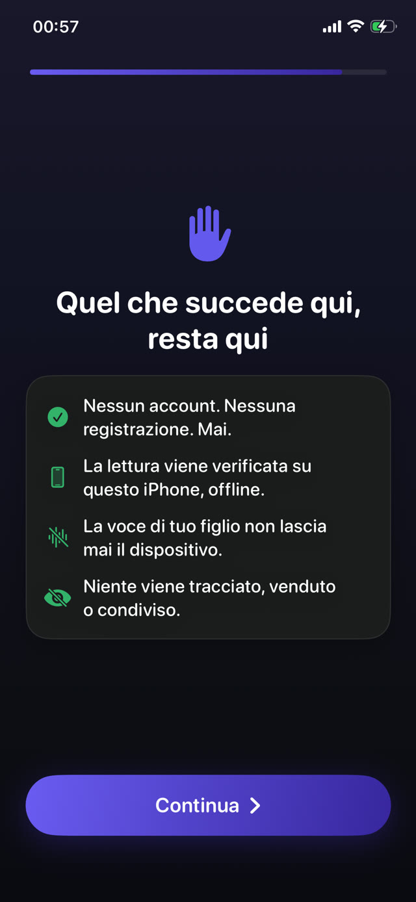

Capire il modo in cui fallisce è più utile di un altro elenco di ore consigliate.


Perché le regole crollano
- Richiedono un adulto presente. Qualsiasi regola fatta rispettare guardando muore la prima sera in cui cucini, lavori o sei fuori.
- Sono negoziabili. Un ricorso accolto insegna a tuo figlio che la regola è un'offerta di apertura, e ogni sera diventa una nuova trattativa.
- Puniscono senza offrire un'alternativa. Togliere il telefono crea un bambino annoiato e nessun piano, ed è lo stato in cui si inventano gli aggiramenti.
- Sono troppo ambiziose. Una regola che fallisce in un normale martedì non è una regola, è un'aspirazione, e i bambini leggono la differenza all'istante.
Le tre proprietà delle regole che sopravvivono
- Automatica. Deve funzionare che tu sia nella stanza o no, sveglio o no, in vena di uno scontro o no.
- Costante. La stessa regola domani, e martedì prossimo. La stabilità è ciò che le toglie il carattere personale.
- Guadagnabile. Ci deve essere un modo perché tuo figlio ottenga ciò che vuole facendo qualcosa di ragionevole. Una regola senza un passaggio è solo un muro da scavalcare.
Regole di esempio per età
Sono punti di partenza, non prescrizioni. Correggile dopo una settimana di osservazione:
- Dai 4 ai 6: una pagina letta ad alta voce sblocca 15 minuti. Niente schermi nell'ora prima di dormire.
- Dai 7 ai 9: due pagine sbloccano 30 minuti. Di notte i dispositivi si caricano fuori dalla camera.
- Dai 10 ai 12: tre pagine sbloccano dai 30 ai 45 minuti. Nei giorni di scuola prima i compiti.
- Dai 13 in su: quattro pagine sbloccano 45 minuti, concordati con loro invece che imposti. A quest'età l'adesione vale più del controllo.
Far rispettare senza fare il poliziotto
L'obiettivo è togliersi del tutto dal circuito di chi fa rispettare le regole. Non perché la supervisione sia sbagliata, ma perché la tua credibilità è una risorsa limitata e spenderla in una disputa serale sul timer è un pessimo impiego.
Quando è il dispositivo a far rispettare la regola, i disaccordi smettono di riguardare te. Puoi essere la persona che legge con loro, invece di quella che toglie il telefono.
Una regola che fa rispettare il telefono
Guardian Reader è costruito per soddisfare tutte e tre le proprietà. Funziona in automatico attraverso Tempo di utilizzo di Apple, applica la stessa regola ogni giorno e lascia sempre un passaggio: leggi una pagina ad alta voce, guadagna i minuti.
Quando il tempo finisce le app si bloccano di nuovo da sole, e le impostazioni restano dietro un PIN dei genitori, così la regola non può essere modificata dalla persona a cui si applica.
La lettura sblocca lo schermo.
Gratis · Nessun account, nessun tracciamento
Scarica Guardian Reader per iPhone